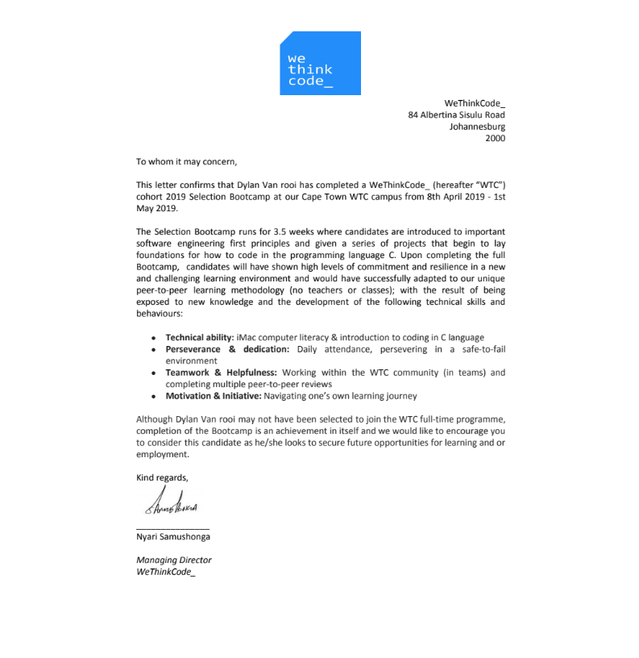

ACADEMIC
High School
Grade 12 completed in the year 2015 with the following subjects:
- English
- Efrikaans
- History
- Consumer Studies
- Mathematical Literacy
- Music
Matric certificate available on request.
Further Courses
- We Think Code software development coding bootcamp (2019)
